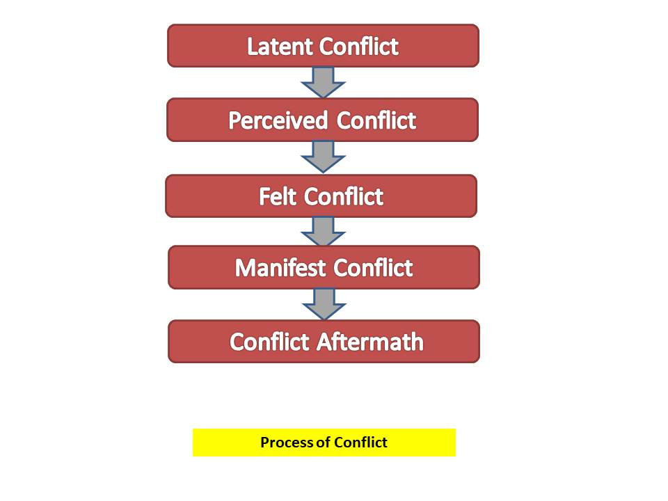

Conflict
According to Wood Et: "Conflict occurs when disagreement exist in a social situation over issues of substance or whenever emotional antagonisms create frictions between individuals or groups."
According to Litterer : "Conflict is a type of behavior which occur when two or more parties are in opposition or in battle as a result of perceived relative deprivation from the activities of or interaction with another person or group."
| Table Of Content |
|---|
Nature of Conflict
- Conflict is a Natural Process : It begins with one party perceiving the other
to oppose or negatively affect its interests and ends with competing, collaborating,
compromising or avoiding.
- Conflict is Universal : Conflict exists everywhere. No two persons are the
same. Hence they may have individual differences. And the differences may be because of
values or otherwise, lead to conflict.
- Everyone is inflicted with Conflict : Conflict may occur within an individual,
between two or more individuals, groups or between organisations.
- Conflict is Multidimensional : It comes into different ways in accordance with
degree of seriousness and capacity. At times, it may improve even a difficult situation.
- Perception : It must be perceived by the parties to it, otherwise it does not
exist. In interpersonal interaction, perception is more important than reality.
Causes of Conflict
- Communication
- Misunderstanding
- Personality clashes
- Competition for resources
- Lack of cooperation
- Differences over methods or stle
- low performance
- Value or goal difference
Level of Conflict
-
Individual Level
- Inter-personal conflict :
- Between two or more people.
- Differences in views about what should be done.
- Efforts to get more resources.
- Differences in orientation to work and time in different parts of an
organisation.
- Intra-personal conflict :
- Occur within an individual.
- Threat to a person's values.
- Feeling of unfair treatment.
-
Group Level
- Inter-group conflict :
- Between two or more groups.
- This type of conflict can be caused by differences in goals, values, or
resources.
- Intra-group conflict :
- Conflict among members of a group.
- Early stages of group development.
- Ways of doing tasks or reaching group's goals.
-
Organisational level
- Inter-Organisational conflict :
- Between two or more organisation
- Examples: suppliers and distributors, especially with the close links
- Intra-Organisational conflict :
- Conflict that occur within an organisation
- can occur along the vertical and horizontal dimensions of the organisation :
Vertical Conflict occur between Managers and Subordinates where
Horizonatal conflict Occur between departments and work groups.
Individual Level
- Inter-personal conflict :
- Between two or more people.
- Differences in views about what should be done.
- Efforts to get more resources.
- Differences in orientation to work and time in different parts of an organisation.
- Intra-personal conflict :
- Occur within an individual.
- Threat to a person's values.
- Feeling of unfair treatment.
Group Level
- Inter-group conflict :
- Between two or more groups.
- This type of conflict can be caused by differences in goals, values, or resources.
- Intra-group conflict :
- Conflict among members of a group.
- Early stages of group development.
- Ways of doing tasks or reaching group's goals.
Organisational level
- Inter-Organisational conflict :
- Between two or more organisation
- Examples: suppliers and distributors, especially with the close links
- Intra-Organisational conflict :
- Conflict that occur within an organisation
- can occur along the vertical and horizontal dimensions of the organisation :
Vertical Conflict occur between Managers and Subordinates where Horizonatal conflict Occur between departments and work groups.
Process of Conflict

- Latent conflict : The first stage of conflict is latent conflict in which the factors that could become a cause of potential conflict exist.
- Perceived conflict : Sometimes a conflict arises even if no latent conflict is present. In this stage one party perceived the others to be likely frustrate his or her goals.
- Felt conflict : Felt conflict is the stage when the conflict is not only perceived but actually felt and cognized. This is the stage when the concerned parties become sensitive towards the projects and start focusing on the dispartity in the outlook.
- Manifest conflict : Manifest conflict is the stage when the two parities engage in behaviour which evoke responses from each other.
-
- Conflict Aftermath :The aftermath of a conflict may have positive or negative repercussion for the organisation depending upon the how conflict is resolved.
Functionality & Dsyfunctionality of Conflict
- Functional conflict
- Constructive
- Increase Information & idea
- Encourage innovative thinking
- Unshackles different points of view
- Dsyfunctional conflict
- Tension, anxiety, stress
- Drives out low conflict tolerant people
- Reduce trust
- poor decision because of with held or distorted
- Reduce Information
Conflict Management
- Conflict management is the practice of being able to identify and handle conflict sensibly, fairly, and efficiently. since conflicts in a business are a natural part of workplace.
- It is important that there are people who understand conflicts and know how to resolve them. This is important in today's market more than ever.
- Unmanaged or poorly managed conflicts generate a breakdown in trust and lost productivity.
Conflict Management Strategies
- Avoiding : The desire to withdraw from or suppress a conflict.
- Accommodating : The willingness of one party in a conflict to place the opponent's interests above his or her own.
- Compromising : A situation in which each party to a conflict is willing to give up something.
- Competing : A desire to satisfy one's interests, regardless of the impact on other party to the conflict.
- Collaborating : A situation in which the parties to a conflict each desire to satisfy fully the concerns of all parties.
Steps to Conflict Resolution
- Cost Effective Atmosphere
- Clarify Perceptions
- Focus on individual and shared needs
- Build shared positive power
- Look to the future and learn from the past
- Generate Options
- Develop "Do-ables"
- Make Mutual Benefit Agreements